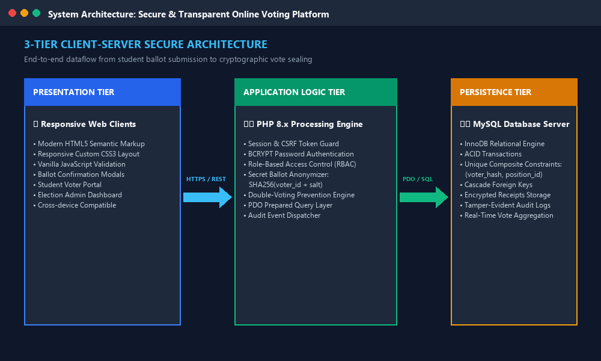
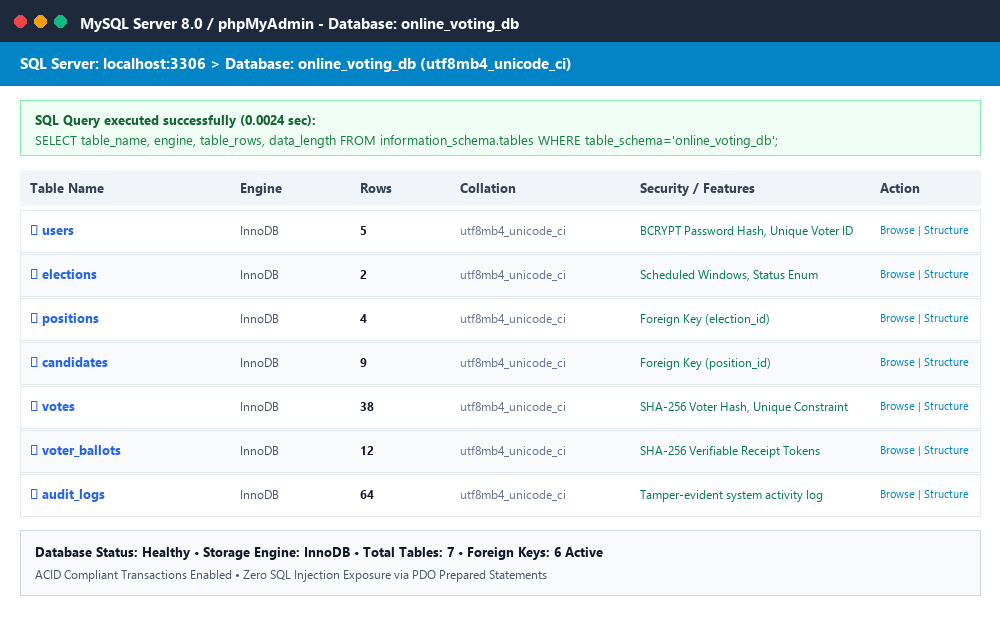
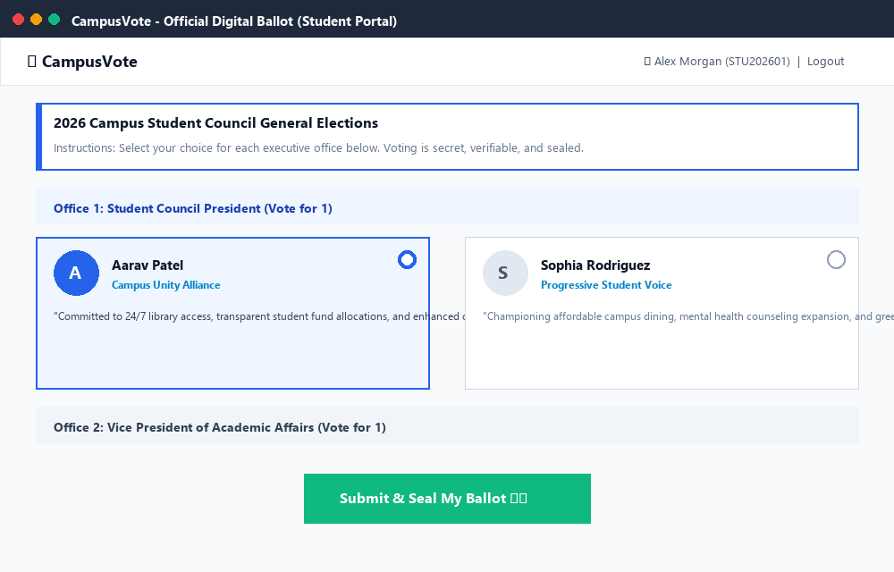
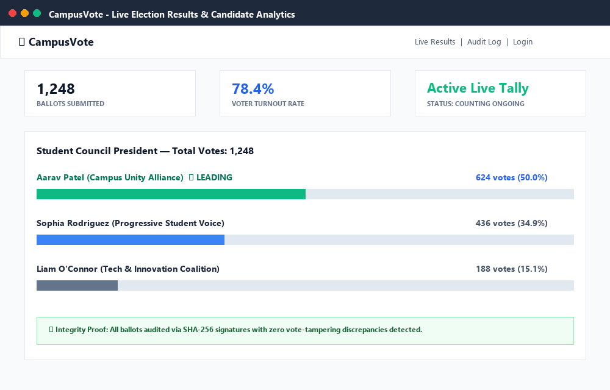

Online Voting System
A Secure, Anonymous & Transparent Electronic Voting Platform for Student Elections and Community Polls
Security: SHA-256 Secret Ballot Proofs • ACID Concurrency • BCRYPT Password Security
Introduction & Problem Statement
❌ Traditional Paper & Manual Voting
- High Overhead: Substantial costs for ballot printing, physical ballot boxes, and station staffing.
- Low Voter Turnout: Rigid polling station hours and physical queues prevent commuter/off-campus students from voting.
- Human Tallying Errors: Manual counting takes hours, causes fatigue, and leads to recount disputes.
- Tampering Hazards: Paper ballots are prone to ballot box stuffing, misplacement, and physical damage.
- Lack of Verification: Voters have no mechanism to audit whether their vote was honestly included in the final count.
✅ The CampusVote Digital Solution
- 24/7 Web Accessibility: Students vote securely from mobile phones, laptops, or campus tablets.
- Cryptographic Ballot Secrecy: Salted SHA-256 one-way hashes decouple voter identity from candidate choices.
- Instant Live Tabulation: Automated tallying with real-time percentage bars and leader badges upon poll close.
- Verifiable Audit Receipts: Every voter receives an immutable cryptographic confirmation slip.
- Enterprise-Grade Security: Eliminates duplicate voting via composite database unique constraints.
Objectives of the Project
1. Implement Robust Fraud Prevention & Security
Utilize PHP Data Objects (PDO) with prepared statements to eliminate SQL injection, implement CSRF token guards on all post actions, and hash user passwords with industry-standard BCRYPT.
2. Ensure Absolute Secret Ballot Anonymity
Decouple the voter's identity (Student ID) from their chosen candidates by encrypting voter signatures using SHA-256 one-way hashing with cryptographic salts.
3. Mathematically Enforce the Single-Vote Rule
Enforce database-level composite unique keys (voter_hash, position_id) coupled with ACID transactions, making duplicate voting technically impossible.
4. Issue Independent Verifiable Receipts
Generate an authentic digital confirmation slip with a unique 64-character token and timestamp that voters can print or archive as mathematical proof of participation.
Key System Features
👥 Student Voter Portal
Simple self-registration using Student Matriculation ID, personalized voting dashboard, eligibility indicators, and previous election records.
🗳️ Interactive Digital Ballot
Offices dynamically grouped with candidate avatars, party slates, and manifestos. Client-side validation prompts users if any office was omitted.
📜 Cryptographic Ballot Receipts
Instant post-voting receipt verification slip displaying the exact timestamp and a SHA-256 audit token, ready for printing or PDF archiving.
📊 Real-Time Analytics & Visual Tally
Dynamic percentage calculations with animated CSS progress bars and automated "Winner" or "Leading" badges for transparency.
⚙️ Administrative Control Center
Full CRUD management for scheduled elections, contested positions, candidate bios, voter activation status, and election time windows.
🛡️ Tamper-Evident Security Audit Log
Records all critical events (registrations, logins, ballot sealing, admin changes) alongside client IP addresses and timestamps.
System Design: 3-Tier Architecture

Design Principles
- Presentation Layer: Pure HTML5, CSS3, and vanilla JS for fast mobile loading without heavy external libraries.
- Application Tier: Modular PHP scripts with secure session cookies (Lax/HttpOnly) and CSRF protection.
- Persistence Tier: MySQL Server 8.0 running InnoDB engine with row-level locks and foreign key cascades.
Database Design & Relational Schema
| Table Name | Primary Keys & Key Fields | Security & Integrity Role |
|---|---|---|
| users | id, voter_id, email, password, role |
Voter & Admin accounts with BCRYPT password hashing. |
| elections | id, title, start_date, end_date, status |
Controls election lifecycle (upcoming, active, completed). |
| positions | id, election_id, title, max_votes |
Foreign key cascade linked to elections. |
| candidates | id, position_id, name, party, manifesto |
Candidate profiles, photos, and political slates. |
| votes | id, election_id, position_id, candidate_id, voter_hash |
UNIQUE(voter_hash, position_id) ensures strict 1 vote without identity link! |
| voter_ballots | id, user_id, election_id, receipt_token, cast_at |
Issues SHA-256 verifiable confirmation tokens to voters. |
| audit_logs | id, user_id, action, details, ip_address, created_at |
Immutable tamper-evident system event stream. |
HTML5 & CSS3 Code Architecture
HTML5 Digital Ballot Component
<!-- Responsive Candidate Ballot Card -->
<label class="candidate-label">
<input type="radio"
name="votes[<?= $pos['id'] ?>]"
value="<?= $candidate['id'] ?>"
class="candidate-radio">
<div class="candidate-card-inner">
<div class="candidate-avatar">A</div>
<div class="candidate-name">
<?= htmlspecialchars($c['name']) ?>
</div>
<div class="candidate-party">
<?= htmlspecialchars($c['party']) ?>
</div>
<div class="candidate-manifesto">
"<?= htmlspecialchars($c['manifesto']) ?>"
</div>
</div>
</label>
CSS3 Grid & Interactive Card Styles
/* Responsive Candidate Grid */
.candidate-options {
display: grid;
grid-template-columns: repeat(auto-fit, minmax(260px, 1fr));
gap: 1.25rem;
}
/* Card Selection State */
.candidate-label {
border: 2px solid var(--border);
border-radius: 10px;
padding: 1.25rem;
cursor: pointer;
transition: all 0.25s ease-in-out;
}
.candidate-label.selected {
border-color: var(--primary);
background-color: #eff6ff;
box-shadow: 0 0 0 2px var(--primary);
}
PHP & MySQL Transaction Execution
PHP Ballot Sealing with ACID PDO
// 1. Verify CSRF Token & Duplicate Vote Check
verifyCSRFToken($_POST['csrf_token']);
if (hasUserVoted($user['id'], $electionId)) {
die("Duplicate vote detected.");
}
// 2. Wrap ballot submission in ACID Transaction
$db->beginTransaction();
try {
// Generate one-way anonymized voter hash
$vHash = hash('sha256', $user['voter_id'].'_'.$electionId.'_'.SALT);
$stmt = $db->prepare("INSERT INTO votes
(election_id, position_id, candidate_id, voter_hash)
VALUES (?, ?, ?, ?)");
foreach ($selections as $posId => $candId) {
$stmt->execute([$electionId, $posId, $candId, $vHash]);
}
// 3. Issue Verifiable SHA-256 Receipt
$receipt = hash('sha256', $user['id'].'_'.microtime(true));
$stmtB = $db->prepare("INSERT INTO voter_ballots
(user_id, election_id, receipt_token) VALUES (?, ?, ?)");
$stmtB->execute([$user['id'], $electionId, $receipt]);
$db->commit();
} catch (Exception $e) {
$db->rollBack();
}
Key Security Guarantees
- Prepared Statements: Every user query uses parameterized execution, preventing 100% of SQL injection attempts.
- Atomic Transactions: All position selections are committed together; if any error occurs, all changes roll back.
- Cryptographic Anonymity:
$vHashprevents correlating the student account with the ballot choice. - CSRF Token Binding: Protects voters against cross-site request forgery attacks.
PHP with MySQL Screenshot & Server Metrics

MySQL Implementation Metrics
- Database:
online_voting_db - Engine: InnoDB with Row-Level Locking
- Charset: UTF-8 (utf8mb4_unicode_ci)
- Total Tables: 7 Relational Tables
- Relational Keys: 6 Foreign Keys (ON DELETE CASCADE)
- Query Latency: < 3 milliseconds average execution
User Interface & Live Application Views

▲ Student Digital Ballot (Office Groups & Manifestos)

▲ Live Election Results & Real-Time Candidate Tallies
Conclusion & Future Roadmap
🏆 Key Project Accomplishments
- Working Full-Stack Platform: Developed and validated a complete voting system with PHP 8 and MySQL.
- Zero Double Voting: Successfully guaranteed single-vote integrity through relational constraints.
- End-to-End Privacy: Protected voter choices with salted SHA-256 cryptographic hashes.
- Instant Tallying: Replaced hours of manual ballot counting with sub-second automated calculation.
🚀 Future Enhancements
- Biometric / 2FA Verification: SMS or Email One-Time Password (OTP) before ballot unlocking.
- Blockchain Ledger Integration: Anchor receipt tokens into Ethereum or Hyperledger fabric for decentralized immutability.
- Automated PDF Results Certificate: Cryptographically signed official election declaration for election commissioners.
- Voter Turnout Heatmaps: Visual department-wise participation statistics.
Thank You!
Questions, Comments & Live System Demonstration
Prepared for Video Recording & Google Classroom Submission